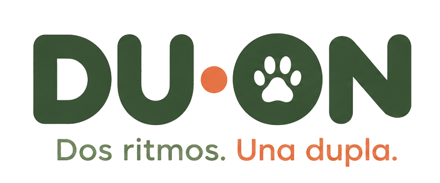
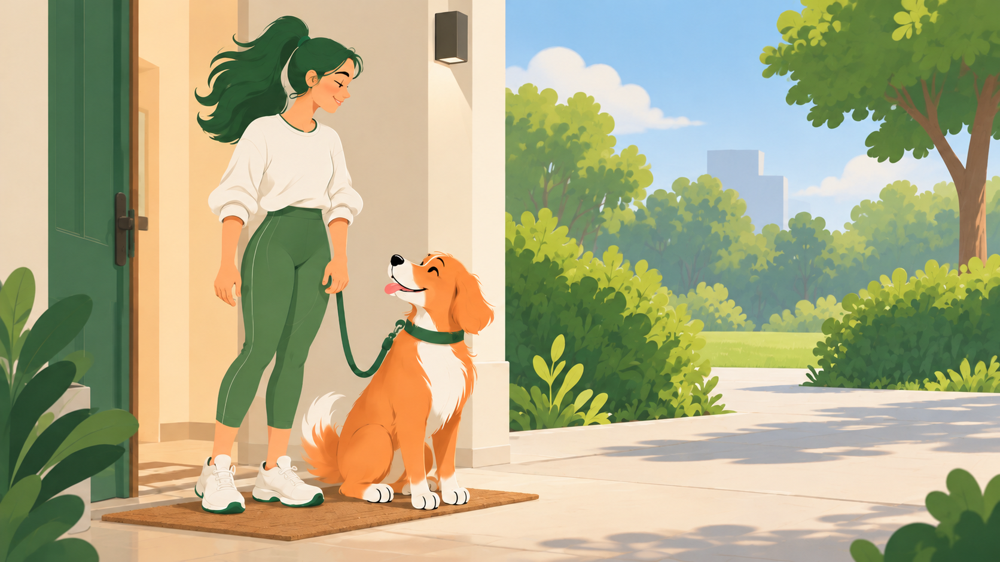
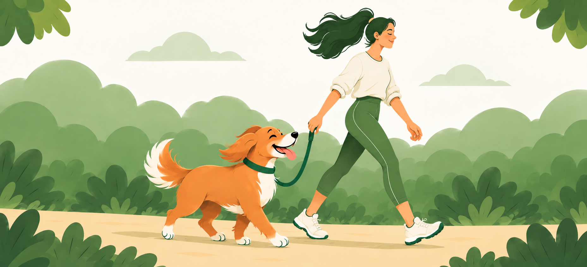

Caminar
Para quienes quieren hacer de las caminatas una rutina y compartir más tiempo en movimiento.
Paso a paso
Empezar a moverse es más bonito en compañía. DU·ON busca ayudarte a caminar y correr con tu perro, considerando las necesidades de ambos.
Probar el prototipoExplora la idea. No necesitas salir a hacer ejercicio.

Quizá quieres caminar con más constancia. Quizá te gustaría empezar a correr. O simplemente buscas compartir un momento distinto con tu perro.
La propuesta de DU·ON parte de los dos: tu experiencia, la actividad de tu perro y una forma gradual de encontrar su ritmo juntos.
Encuentren su manera de empezar
Explora la creación de sus perfiles y cómo se presenta el punto de partida de la dupla.
Caminar, correr o empezar caminando para avanzar gradualmente.
Recorre una sesión guiada de demostración para conocer la experiencia propuesta.
En la página de pruebas puedes compartir qué entendiste, qué te confundió y qué mejorarías.
Cada dupla tiene un punto de partida distinto. La intención es considerar las necesidades de ambos, con espacio para caminar, hacer pausas y adaptar la actividad.
DU·ON está en desarrollo. Los criterios de actividad requieren revisión profesional. El prototipo no sustituye orientación médica o veterinaria ni ofrece indicaciones de ejercicio validadas.
Todavía no. Lo disponible es un prototipo para explorar el diseño y dar tu opinión. Las funciones de la aplicación siguen en desarrollo.
No. Puedes explorar los perfiles y las sesiones guiadas desde donde estés. Las sesiones guiadas son demostraciones visuales, no indicaciones para hacer ejercicio.
No. Salida libre registra el tiempo; el mapa, la distancia y el ritmo son ejemplos. Es distinta de la simulación guiada.
El botón de prueba abre la página del demo, donde encontrarás el prototipo y la sección “Cuéntanos cómo te fue”.
Explora DU·ON y ayúdanos a entender qué necesita tu dupla.
Probar el prototipoAbre la página de pruebas en otra pestaña.